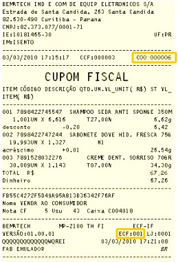


<div class="col" style="width:100%;background-color:transparent;">


    <div class="row" style="width:100%;padding-top:40px">
        <div class="col" align="center" style="font-family:Arial;font-size:22px;color:black;"><strong>Número Contador de Ordem de Operação</strong></div>
    </div>


    <div class="row" style="width:100%;padding-top:20px">
        <div class="col" align="center" style="font-family:Arial;font-size:16px;color:black;">

            O número do cupom fiscal é o COO (Contador de Ordem de Operação), que fica logo acima do título “Cupom Fiscal”. Esse número é geralmente solicitado para participar de sorteios de supermercados e lojas. <br><br>
            <div>
                
            </div>
            <br><br>
        </div>
    </div>

    <div class="row" style="width:100%;height:60px;background-color:transparent;padding:0px;margin:0px">

        <div align="center" style="width:200px;height:40px;border:solid;border-width:1px;border-color:black;border-radius:10px;margin:auto;color:#FFFFFF;background-color:black;padding-top:5px;cursor:pointer" onclick="anima_informacao(0,'FECHAR')">
            Fechar
        </div>

    </div>

    <div class="row" style="width:100%;height:60px;background-color:transparent"></div>


</div>

